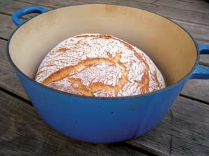
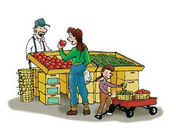

Rave reviews are still coming in, from both beginners and long-time bread bakers, about the Easy, No Knead Crusty Bread recipe from the December 2007/January 2008 issue. Tons of helpful reports and tips are being posted with the article online. We’re hoping some of you will post advice on how this basic no knead technique can work with other favorite bread recipes. We’ll publish your reports in a future issue and in particular we would welcome some no knead whole wheat recipes.
The other hot topic in recent reader mail is Live on Less and Love It! from the October/November 2007 issue. Again, you can read more great comments on our Web site. There’s clearly a wide range of opinions about the author’s call for national health care. Special thanks to David B. Grundy for his thoughtful perspective (below).
Well, you’ve hit the jackpot of all bread recipes with the Easy, No Knead Crusty Bread, (December 2007/January 2008). I made it, not quite believing it would work, and it did! Exactly like the pictures. I love the magazine always, with its articles on solar, wind, backyard chickens, etc., but I have always wanted a recipe for this type of bread, and it is absolutely delicious! So thank you again and keep up the good work.
I’m a bread baker from a long ways back, and, well, I just could not see how this recipe could possibly bake into a decent bread. After reading the recipe, I decided, what have I got to lose? I’ve done three bakings since, and a better soup-dipping bread recipe is hard to find.
I am extremely happy to say I think I have found the perfect recipe and method of baking bread. Thank you so much. I have tried many ways prior and have not had nearly the success as I did with this. I was ecstatic when I took the lid off for the final bake.
This no knead bread recipe worked great for me, and I’ve never baked anything but frozen pizza before! We don’t have a Dutch oven, so I’ve been using the removable ceramic crock from our crock pot, along with its glass lid; works great!
Some online readers have reported that glass and ceramic containers will break at the high heat called for with this no knead bread technique. - Mother
Thank you so much for the Easy, No Knead Crusty Bread recipe, directions and related articles. I tried the original recipe yesterday, and today have a dill-onion-cheese version on the rise. Grandmother’s old cast-iron Dutch oven worked perfectly.
We invite readers to try this no knead technique with their favorite bread recipes, and post recipes/reports online in the comments section of Easy, No Knead Crusty Bread. - Mother
What a great article about solar and renewables (Solar is the Solution, December 2007/January 2008). Yes, all of the fossil fuels are finite - as mentioned by Steve Heckeroth - and they cause lots of pollution. Not mentioned is the amount of water used by coal, nuclear and natural gas. They all work by generating steam from water. Fossil fuels also get a lot of subsidies from our government. In fact, nuclear couldn’t exist if it had to pay its own way. It’s the most expensive energy ever invented.
My home produces more clean energy than we use for over half the year with only a 2.5 kW grid-tied solar system. In fact, we help the utilities by adding clean renewable energy during the peak hours of the day right where it is used. Using net metering, they sell our extra energy to our neighbors at the full price with no transmission losses or transformers used. The new Vehicle to Grid (V2G) electric vehicles that AC Propulsion makes can actually charge at off-peak rates and sell on-peak, helping the energy grid even more. These vehicles can make you money while parked at home or at work! They also use long-lasting nontoxic batteries like lithium and NiMH. What a great solution to clean energy needs and oil reduction. Instead of investing in wars with no end we could be producing solutions for the entire world.
I just finished reading Solar Heating Plan for Any Home, December 2007/January 2008. In a photo caption it says this system will work with both radiant floor and hot water baseboard heating systems. I think it is unlikely that this system will be able to achieve temperatures high enough to work well with a baseboard heating system. Otherwise I found the article very informative and interesting and I am considering such an application in my future home with radiant heat.
Author Gary Reysa agrees with Haley; the set-up described in the article will not work efficiently with a baseboard system. - Mother
I had to chuckle when reading the story about using vegetable oil for fuel (Would You Use Veggie Oil to Fuel Your Vehicle? December 2007/January 2008) - at least you printed the fact that it’s illegal (so many other magazines omit this vital piece of information). Earlier this year I sent away for a biodiesel still, and in the same week received a letter from the Missouri Department of Revenue - explaining how I would need to estimate my production and usage, the records I would need to keep, and the penalties and fines, etc., for failure to comply. Looking over the necessary forms and paperwork was enough for me. I contacted the company and told them to keep the still - I had no intention of taking on that mountain of paperwork for one vehicle.
There’s a lot of talk about alternative energy and alternative fuels, but I’m convinced the government just doesn’t want us making or using any. I found plans for a still, and it was easy to build with material obtained locally. I can turn out enough fuel to run a small emergency generator and other applications. Who would’ve thought we’d be back to dodgin’ “revenuers” with our stills and homemade brew?
I was so happy to see your article on natural, healthy and environmentally sound options for baby care. I was disappointed however that you failed to mention the best thing you can do for your baby and the environment: breast-feeding. There are many health reasons for feeding your child human milk. I wanted to point out a few of the environmental advantages to breast milk over both cow’s milk- and soy-based formula: There are no pesticides, synthetic chemicals or synthetic fertilizers used in the production of breast milk. No greenhouse gasses are produced in the manufacturing of breast milk. It’s produced locally and requires no shipping. Breast milk comes in a reusable (and might I say decorative) container with no excess packaging. In all, not only is breast milk the healthiest option for baby and the most economical option for mom and dad, it’s the most sustainable option for the planet.
During the ’70s I used a recipe for tomato soup from a Mother Earth News publication. The recipe was called something like Ruby Hoop’s Tomato Soup. I lost the recipe somewhere along the line and wondered if you have any way for me to retrieve it. That was some good soup. I used to freeze large batches using veggies from my garden.
You can find the original Ruby’s Regal Tomato Soup recipe online in our Amazin’ Archive. - Mother
It was a pleasure to read your article on home fermentation (Make Your Own Hard Cider, October/November 2007) as this has been one of my favorite hobbies for a couple of decades. I started home brewing while living in northeast Texas where there are many berry growers and orchards. I would like to add a couple of suggestions to the advice in the articles ...
Randy’s great tips are posted online in the comments section of Make Your Own Hard Cider. - Mother
Regarding Bee Colony Collapse Disorder: Remember when, in 1998 or so, genetically modified corn with the Bt pesticide was shown to kill not only larvae of cut worms but also the monarch butterfly? In the same study it was shown that Bt not only killed the Monarch larvae, but the ones it didn’t kill were smaller and weaker. I think this may be the time to rethink genetic engineering and insecticide-altered foods.
I want to share my “greatest thing since sliced bread.” Last Christmas my husband and I bought an Xtracycle hitchless trailer for my bike. We live in a truly urban area, Japan. Most people look at us funny when we tell them we don’t own a car, but the trailer has paid for itself 10 times over with no payments, insurance, maintenance fees or even fuel. The bike actually goes faster than most cars during traffic/commuting hours. My husband often pedals with me, and sometimes my 3-year old, on the back with six bags of groceries in the trailer. My husband has lost more than 30 pounds. We’ve found more places we’d have missed otherwise. I have also noticed that we tend to smile more. We love the idea that what we’re doing is really green, and at the same time saves us some green for the more important things.
Because industry has produced better and quieter wind generators, I propose that, where feasible, wood utility posts be replaced by metal towers, holding generators wired into the grid all over the world.To do this all governments must stop all wars and stop building guns, tanks, ships and airplanes for war and use the resources to build and maintain the high lines for everyone. It may be that solar panels can be used along the way also.
I had to sympathize with Ellen from New York (Dear Mother, December 2007/January 2008) bemoaning the insurance company essentially stonewalling her small egg-selling enterprise. It immediately brought to mind local-foods guru Joel Salatin’s latest book, Everything I Want to Do Is Illegal, in which he describes facing the same obstacles in almost every entrepreneurial farm undertaking he embraced. His essential premise is that we’ve come to a point where our modern “control-freak” political and bureaucratic culture can simply no longer abide the concept of the small, multifunctional farmstead - and by extension is stifling the very foundations of innovative, locally based, small-business economy that made America so successful in the first place.
Salatin concludes that if you wish to stay true to your ideals, make an honest living, and perhaps even save the world from ruination, you’ll ultimately have to skirt the law a bit more than you’d like to, and walk the line between authoritarian conformist and cultural rebel. But take heart, he advises: That’s one more thing you’ll share in common with the “rebels” who founded our country.
Please continue to write about the sustainability of keeping your own chickens. Not only are the eggs better, but little is reported on how affectionate the species is. Our hens and roosters are all cuddly lovebugs (we have 42). Who knew?! They make wonderful and amusing pets. And if more folks kept them in their back yards, we could abolish the cruelty from the inhumane factory farms. For those unaware of the factory farm egg, go to either www.eggindustry.com or www.nobatteryeggs.com. Support your local farms or raise these beautiful creatures yourself.
After reading readers’ complaints against Mr. Idlebrook, I had to go back and read the original article, Live on Less And Love It! (October/November 2007). Nowhere can I find that Mr. Idlebrook is asking anyone to pay for his health care. His suggestion was that we campaign for National Health Care, merely advocating that we as a nation heed suggestion #3, avoid the middleman. In the case of health care, the middleman would be the insurance companies that have made our health care system the most inefficient in the world. It’s the most expensive and yet ranks 37th, barely edging out Slovenia.
In Dear Mother (December 2007/January 2008) readers take author Craig Idlebrook (Live on Less and Love It!) to task for supporting a national health system (tip #46) while, at the same time, living so simply that he doesn’t pay income taxes. But why single out health care? Federal income taxes also pay for highways, bridges, our military, law enforcement, Congress, the court system, national parks, and on and on.
The point is that national, or universal, health care must be seen as a common good similar to those listed above, not as a “right.” In our present dysfunctional system, if Mr. Idlebrook receives medical services (likely at an emergency room at a higher cost), our health insurance costs go up to pay for them (a process called “cost shifting”). In a universal system, the cost of Mr. Idlebrook’s medical care would be spread throughout the system. Some may see no difference between this and having insurance premiums go up, but there is. Being covered by a universal system, Mr. Idlebrook would more likely seek medical care earlier, thus avoiding higher costs later. Mr. Idlebrook’s care provider would be able to offer the necessary services without having to battle it out with some insurance company employee whose major goal is to keep costs down. Also, the care provider would not have to hire multiple layers of administrative staff to get reimbursed by the insurance companies. The percentage of costs for administration of Medicare is in the low single digit numbers. For private insurance the cost is around 30 percent. Health care is considered a common good because we all benefit when all of us are as healthy as possible.
It seems to me the best way to pay for such a system is the same way we pay for all the other services we receive from the government. If people pay low, or no, income taxes, we don’t deny them police protection. We don’t prohibit their children from attending school. We allow them to drive on the roads and visit national parks. Why should it be any different for health care?
It’s worth remembering that every other industrialized country offers its citizens universal health care and does it at a cost that is about half of what we spend per capita. In so doing, many rank far above the United States in such areas as longevity, child death rate, access to care, etc.
During this time of presidential campaigns, we will probably hear the term “socialized medicine” thrown at us as a reason to reject universal health care. Those who use the term know that they are not the same, and we should reject the comparison and call upon candidates to tell us the truth.
Last night I read Live on Less and Love It! I thought of a couple more things to add to the list of 75. First, how about - instead of moving to the country and building your own house, tearing down forests and displacing wildlife from their homes - renovating a place in town and helping struggling municipalities. Second, I am continually amazed that the most obvious and helpful way to promote sustainability and decrease global warming is never mentioned in the media. This is to really think about family planning. Humans are causing all this trouble but refuse to explore this as an issue. Forty-nine percent of pregnancies in the United States are unplanned, and there are 542,000 children in foster care. Wouldn’t it make sense to take better care of the children that are here than to add more and more?
I found Live on Less and Love It! (October/November 2007) to be both inspiring and enlightening. I too am a person who refuses to work at a job I hate. I have found cutting costs to be quite fun. I now shop at a local thrift store and am proud to say it! I figure that shopping there cuts down on child labor and also on the oil that would be used if I bought the same items from a retail store. Besides, I get name brand clothes for a fraction of the cost.
Another way I cut my costs is packing food and water from home instead of buying it at school. The savings are extraordinary!
I have found that frugal living is not only necessary, but exciting as well.
Thank you for spreading the word on rediscovering the library in your October/November 2007 issue. The article Live on Less and Love It! was an inspiration. Librarians and library staff have been promoting library free services such as DVDs, CDs and audiobooks to the public. Yes, we even have magazines that can be checked out. After all we are more than just books! Thank you again.
We agree, Noreen, libraries rock! - Mother
|
 ROGER DOIRON This no knead crusty bread is easy and delicious. |
ISTOCKPHOTO/TAMAS KOONING Mother’s readers enjoy chickens for their eggs and as lovable pets. |
 BRIAN ORR Find fresh, local food for your family at a farmers market. |